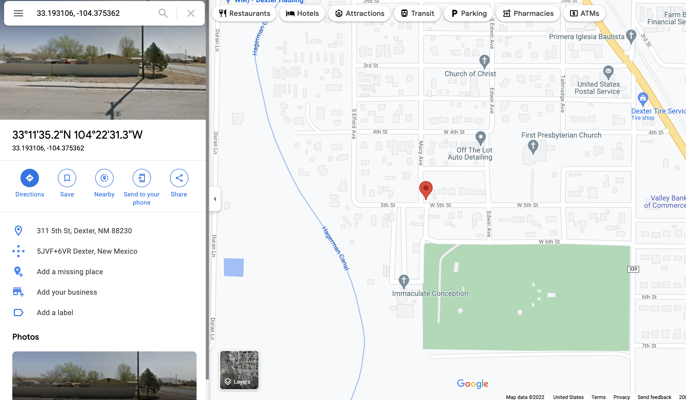

02/08/21

02/03/21
Today, I woke up feeling a bit annoyed with Mason.
But my mood turned around quickly when he surprised me
with a vacation! He told me he booked us a weekend trip at t
his beautiful resort in the desert. I think it's the perfect
way for us to spend some time together and relax. It's only a
few hours drive from our town in Texas, and he says if we leave
early in the morning, we should be arriving by dinnertime. I'm so
excited! Let's hope it all goes well.
01/29/21
Well, Mason and I have been dating for a few weeks now, and things
are going alright. He is almost always very quiet and reserved, but
every now and then he will snap out of nowhere. Take this weekend for
instance, we were at my house, when I noticed that there were some strange
men parked outside on the street. I live in the bad part of town, so my
first instinct was to call 911. When I reached for the phone, Mason
shouted at me! He told me he doesn't trust cops, and that we could cause
someone to get hurt if we involve them. Luckily, the men left soon after,
but I'm just very confused. Why would he yell at me like that?
01/13/21
Last night, Mason took me on our third date. We went to this small
restaurant on the edge of town that I had never heard of. The food was
great, but the thing is, they never gave us a check, and the manager told
us all the drinks were on the house. I was a bit confused, but Mason
said he was friends with the owner. I tried to ask Mason more about his
job, but he didn't seem like he wanted to talk about it. I guess he's sick
of construction-talk after a whole day on the job. He has the most beautiful
eyes, and is very soft-spoken. Usually, I have trouble hearing him, but there
was nobody else in the restaurant that night so it didn't cause any problems.
01/09/21
Well, I'm happy to report that the date went very well. He picked me up
at 7:00 and was dressed surprisingly well for a guy. At first I was a bit
put off since he was driving a white van, but he explained that he worked
for a construction company, and the car was given to him by them. At dinner,
he told me all about his family- how he didn't come from money but his parents
were very hardworking people. He says he works hard to show appreciation for
his parent's sacrifice. I'm starting to like this guy.
01/04/21
The most amazing thing happened today. I was going grocery shopping,
and I needed to find the tomato sauce. I got to the right aisle, but
the brand I was looking for was on the top shelf, and I couldn't reach
it! Suddenly, a handsome (and very tall) man came up to me, saw what I
was looking for, and handed me the jar. He was so sweet. We started to
chat, and we really hit it off! His name is Mason, and he asked me to go
on a date this Friday! I'm a bit nervous, but I can't deny that I'm
intrigued. We'll see how this date goes, but I'm feeling optimistic.